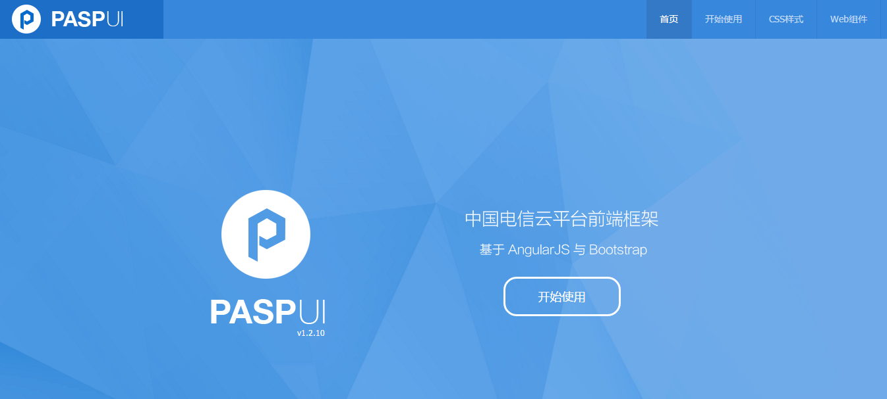
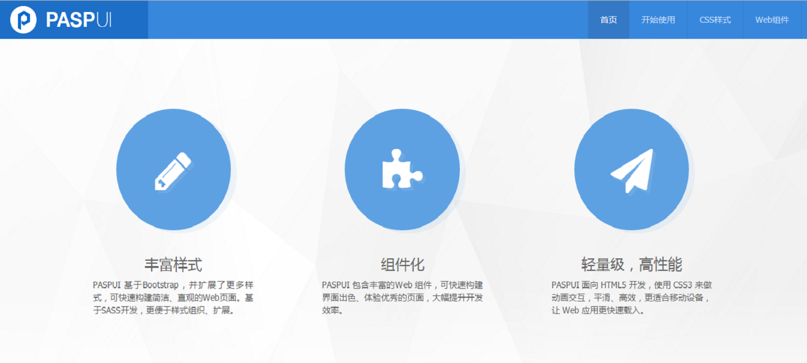
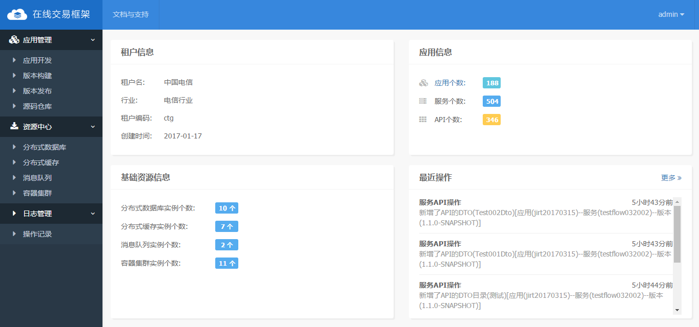
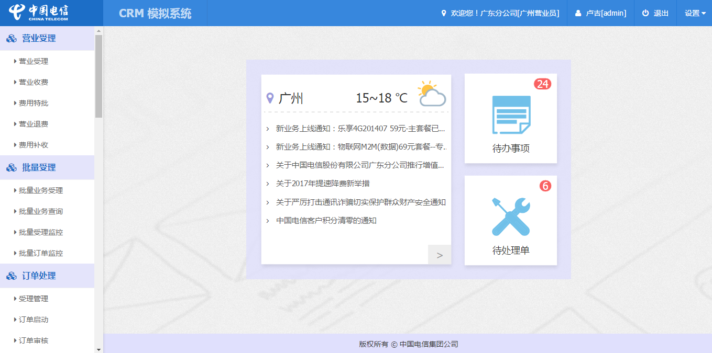
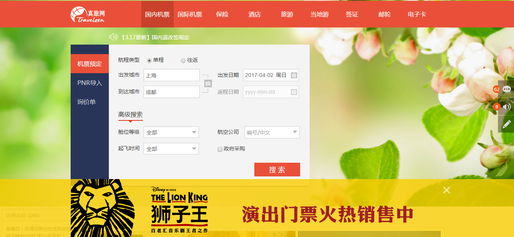
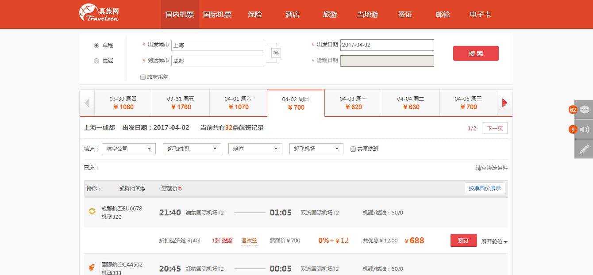

-
- Basic info. 基本信息
- 个人信息: 王玉涛 / 男 / 27岁
- 联系电话: 15618556743
- 毕业院校: 东华大学
- 最高学历: 硕士 / 软件工程
- 政治面貌: 共产党员
- 个人博客: xuww.wang
- GitHub: https://github.com/WangytBest
-
- Experience. 项目与工作经验
京东（2017.7 - 至今）
-
京东药京采项目项目地址
药京采是京东医药旗下的第三方医药B2B批发平台，旨在通过互联网，为医药工业企业、商业企业、零售企业、医疗机构提供“一站式”开发平台交易撮合服务。H5页面主要包括采购关系、发票信息、地址信息、优惠券、商品清单、申请售后等功能页面。
该项目包括原生app和H5两部分，我主要负责H5页面的开发。项目采用了 webpack+vue+vue-router+vuex 的形式进行开发，独立完成项目的搭建和部署工作，协调页面开发工作。
-
京东互联网医院项目地址
主要功能包括医生列表的展示、医生信息的展示、用户可以选择感兴趣的医生进行在线咨询， 并可以查看自己的问诊状态以及医生给自己开的处方等。
该项目包括医生端(原生 app)和患者端(H5)两部分，我主要负责了患者端和医生端 app 内嵌 H5 页面的开发。项目采用了 webpack+vue+vue-router+vuex 的形式进行开发，我负责项目整体架构工作，并指导新入前端的同事进行项目开发。在项目中引入了Eslint 规范，来规范编码。
-
京东国内机票项目地址
主要功能包括 H5 内国内机票的搜索、查询、列表展示并进行相应的下单操作。在项目时间紧、 任务重、产品需求不明确的情况下，克服各种困难，成功保证产品上线。
项目采用了 webpack+vue+vue-router+vuex 的形式进行开发，我负责了项目的整体架构设计， 并完成页面开发工作，成功保证项目上线。
-
手机智能导购项目地址
中国电信IT研发中心（2015.7 - 2017.6）
-
中国电信云平台前端框架(PASP-UI) npm
PASP-UI 是针对中国电信云平台开发的前端框架
基于 AngularJS 与 Bootstrap ，在此基础扩展了更多样式，可快速构建简洁、直观的Web页面。样式基于 SASS 开发，更便于组织、扩展。
框架提供了丰富的 Web 组件，可快速构建界面出色、体验优秀的页面，大幅提升开发效率。
提供了基础的前端工程脚手架，能够使开发人员快速上手开发。脚手架使用当前流行的 wepback 作为模块加载器和前端构建工具，提高了前端开发人员的开发、维护效率。
本人参与了主要的框架选型和开发工作，PASP-UI前端框架现在已在研发中心内部广泛使用。
  -
中国电信在线交易框架( CTGAE )
参与项目的前端架构选型和开发的整个过程。项目是使用 AngularJS + Bootstrap 开发的单页面应用，利用 AngularJS 的 MVVM 框架和 Webpack 将项目模块化，替代了电信传统的前端开发模式，使得开发进度大幅提高，团队合作更有效率。
使用 AngularJS 框架 和 Sass 预处理器来实现前端组件及数据交互，使用webpack改进工作流，提高前端工作效率。
 -
中国电信计费系统( CRM )
搭建前端的整体架构。项目选用 webpack + Gulp 工具搭建项目开发环境，使用AngularJS + Bootstrap开发的单页面应用，利用 AngularJS 的 MVVM 框架和 Webpack 将项目模块化。
使用 AngularJS 框架 和 Sass 预处理器来实现前端组件及数据交互，使用webpack改进工作流，提高前端工作效率。

真旅网计算机软件开发有限公司（2014.3 - 2015.3）
-
机票在线交易平台 项目地址
真旅网一站式综合旅游服务平台由顶尖技术团队打造，旨在采用先进的互联网技术，为业界同行打造旅游分销新模式。平台于2013年年底正式上线，涵盖机票、酒店、旅游、自由行、当地游、邮轮、签证及保险等多元化产品服务。真旅网采购商平台为客户提供优质、快捷、方便的机票购买服务。
本人主要负责机票业务的前端研发工作，包括国内国外机票的查询业务、机票政策规则的界面开发。前端运用 HTML5 + CSS3 + Javascript技术，使用Freemarker作为模板引擎，以及jQuery、kendoUI组件库。
 
-
- Skill. 技能清单
Web前端
-
HTML / CSS
能够编写语义化的 HTML，模块化的 CSS，完成较复杂的布局
掌握BootStrap框架
熟悉 Less / Sass 等CSS预处理和后处理方法、工具
-
JavaScript
熟悉原生Javascript，对闭包、作用域等有一定的了解
能运用模块化、面向对象的方式编程
掌握 AngularJS、Vue.js ，具有一定的项目开发经验
-
其他
熟悉 Grunt 、Gulp 前端自动化工具
熟练使用 firebug 、chrome 调试工具调试代码
熟悉 SVN 、Git版本工具的使用
了解前端安全、性能优化方面的一些知识
后端
-
环境
熟悉 Linux 开发环境，具有两年 Linux 日常使用经验
-
语言
了解 Java，有基本的Java开发经验
其他
-
严重强迫症，不能忍受界面一个像素的偏差，同样不能忍受代码格式一个空格的偏差
学习能力强，能够较快的接受新事物
掌握 Vim Git SVN Sublime 等开发工具的使用
能够熟练使用 Markdown 进行写作

王玉涛•简历
"Write the Code. Change the World."
-
- Contact. 联系方式
- 邮箱: wyt376556023@163.com
- 微信: Wangyutao
- QQ: 376556023
-
- Application. 应聘岗位
- 前端工程师
-
- Tech. 技能点
JavaScriptHTMLCSSAngularJSJava
我是一个充满活力、对前端由衷热爱、善于发现问题的前端工程师。
我目前正在寻找前端工程师岗位，希望借此机会为贵司献上我的一点绵薄之力，快招我到碗里来吧！